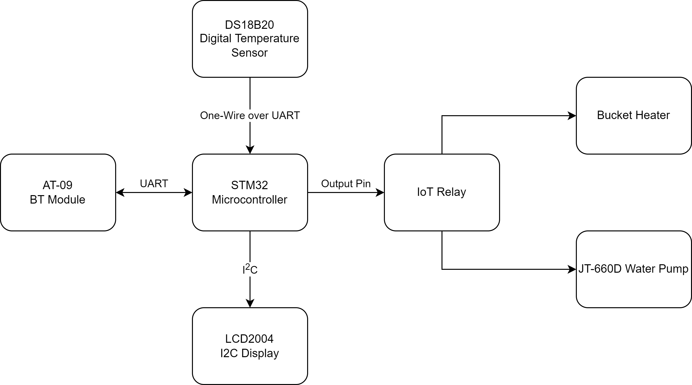

SVM32
Creating a sous vide machine (immersion circulator) using an STM32 microcontroller.
Overview
Sous vide circulators can be used for cooking food more precisely through low temperature long time cooking. I have attempted to replicate many of the features of a retail machine that you can buy in store/online.
Sous Vide Demonstration with a Steak
Features
- Control tempterature and duration
- Display current temperature and remaining time.
- Control settings wirelessly through Bluetooth.
Team Members
Nicholas Tran
Block Diagram
Proposed design with peripherals and communication protocols.
Demo Video
For more information, check out the parts page and updates page